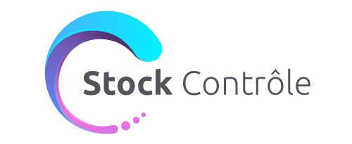

<div class="container-fluid">
  <div class="row">
    <div class="content col-lg-12">
      <header class="col-lg-12">  
        <div class="logo">
          
        </div>
        <nav class="navbar navbar-expand-lg navbar-light bg-light">
          <div class="collapse navbar-collapse" id="navbarNavAltMarkup">
            <div class="navbar-nav">
              <a [routerLink]="['/home']" [routerLinkActive]="['active']" class="nav-item nav-link" href="#">Accueil</a>
              <a [routerLink]="['/products']" [routerLinkActive]="['active']"  class="nav-item nav-link" href="#">Produits</a>
              <a [routerLink]="['/crear-producto']" [routerLinkActive]="['active']" class="nav-item nav-link"  href="#">Créer Produits</a>
            </div>
          </div>
        </nav>
      </header>
      <section class="main container-fluid">
        <!--Componente actual-->
        <router-outlet></router-outlet>
      </section>
      <footer>
        <div class="col-lg-12">
            <h4>Projet Interfaces Homme Machine / WALTER ROA SERRANO - WASSILA YAHIAOUI 2020<a href="http://fx.timemachinevr.co/personalPortfolioFrances/"> Urca</a></h4>
        </div>
      </footer>
    </div>
  </div>
</div>

